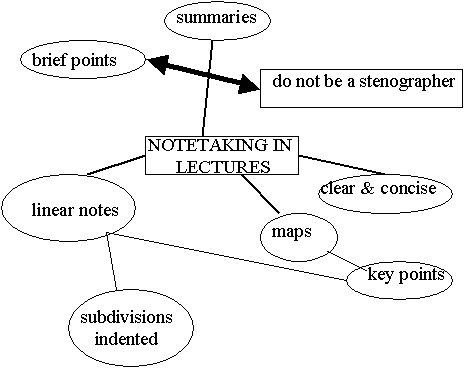
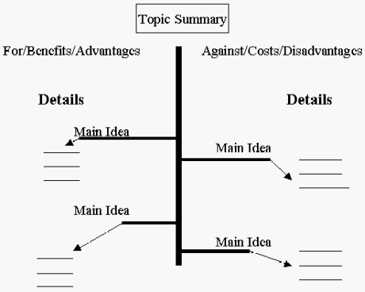
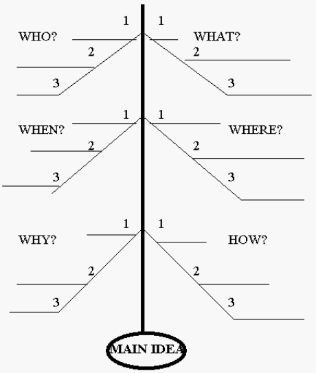

Note making strategies
Note making techniques
Note making techniques
Organising your notes
Note making techniques
There are many different ways to take and make notes and some tools you may want to try, bearing in mind copyright issues. Thinking about how your notes can be used for revision and for writing your assignments is also important. Using abbreviations for common words will save you time so you can focus on essential ideas and information.

• Annotation involves you adding comments to a text that explain or critique what you have read. These can be written in the margins and may accompany words you have highlighted to identify key information. Of course, this would not be on borrowed texts!
• Diagrams are a more visual form of taking notes. They could be mind-maps, charts, tables, graphs, or perhaps a drawing to capture a process or cycle for example.
• Paraphrasing is expressing the ideas and information of others in your own words. Transforming the original source material helps you to understand it.
• Summaries are focused on the main points of the source material so they are a shorter overview.
Pens, pencils, coloured highlighters and paper note pads are familiar tools for hand written notes. However, there are other effective tools for recording lecture material and for making notes electronically on a computer, tablet, iPad or smartphone for example. A variety of note-taking software and mobile applications are also available.
It can be useful to audio record lectures for later review and follow-up note making. Digital recorders are increasingly affordable and files can be transferred to a computer. Many mobile phones also enable audio recording. Mobile devices such as iPads and other tablets and smartpens are becoming popular options.
Please note that you must first have the permission of the lecturer to make such digital recordings.
Intellectual copyright is a crucial issue to consider when recording audio or photographing presentation slides in lectures.
You must have the permission of the lecturer to record these. Some lecturers may provide students with a copy of their lecture and/or presentation slides on their unit site or by request.
Your notes are a key part of your revision strategies when preparing for exams, or indeed, for preparing for active, informed participation in tutorials and when researching for and writing your assignments. Organising and reviewing your notes can also help you make connections between individual ideas and gain an overview of the whole subject.
You will need to revisit and work on the notes you have taken throughout the semester
Whichever note-making layout you choose to use, you may find it useful to use abbreviations and shortened versions of commonly used words. This will help you save time with writing so that you can concentrate on noting the essential points or ideas.
Click for some common abbreviations
Note layouts
There are many ways you can lay out your notes. Some common approaches are demonstrated in this section: linear notes, key word trees, mind maps, networks and the herringbone technique. Links to other ideas for layouts, including the Cornell Method, are also provided.
Taking notes in a linear or sequential fashion is probably the most common way of laying out your notes. A wide left-hand margin is used so that you can add material to your notes at a later date.
| Details of lecture, book or article | |
|---|---|
|
Wide left hand margin. Approximately one third of your page. This allows you to add material either
|
A. MAJOR TOPIC
B. MAJOR TOPIC |
In this style of notetaking the information is represented in a diagrammatical form. Many different types of diagrams can be used such as key word trees, networks, and herringbone techniques. As a general rule the main idea or topic is written in the centre of the page (or in a prominent position) with key points added around it in a cluster fashion branching out from the central idea.
Mind maps are extremely useful ways of organising ideas. However, you are restricted to using key words. This requires you to be concise but it can be difficult if there is a large bulk of information and it cannot easily be condensed.
Mind maps are also very effective in helping you organise material when you are planning an essay outline.
This basically makes use of a slash pattern to organise ideas. It is especially useful if you are trying to map out the ideas in a debate or controversy. It enable opposing ideas to be mapped e.g. pros/cons, costs/benefits, advantages/disadvantages, and so on.
The herringbone technique, so-named because it resembles a fish skeleton, is useful for analysing a single idea. You ask of the main idea Who?, What?, When?, Where?, Why?, and How? In so doing you are able to represent the key idea and aspects of its supporting data.
Each of who, what, when, where, why and how help you interrogate the key idea thereby assisting you to understanding it. There will be times when one or more of the six questions will not be relevant or appropriate.
This example comes from Monash University, Language and Learning Online, and is part of an excellent interactive resource on note making. Visit http://www.monash.edu.au/lls/llonline/reading/taking-notes/4.3.xml
Organising your notes
You may have explored some note layouts you can use to record, review and annotate what you read and hear as part of your learning, but it is also important to organise and store your notes effectively for easy access.
• Use a separate file for each subject area
• Use file dividers to separate major topics
• Use a separate page for each minor topic
• Label files and dividers clearly
• Number and label pages so you can find and re-file them quickly
• Keep an updated contents page at the front of each file.
• Create a separate digital folder for each subject area
• Create separate folders within the subject folder for major topics
• Create separate documents saved in the appropriate folder for each minor topic
• Name your folders and files meaningfully and logically
• Include page numbers and document labels in headers and/or footers.
• You'll find more information about managing and protecting your work in Managing Your Studies.